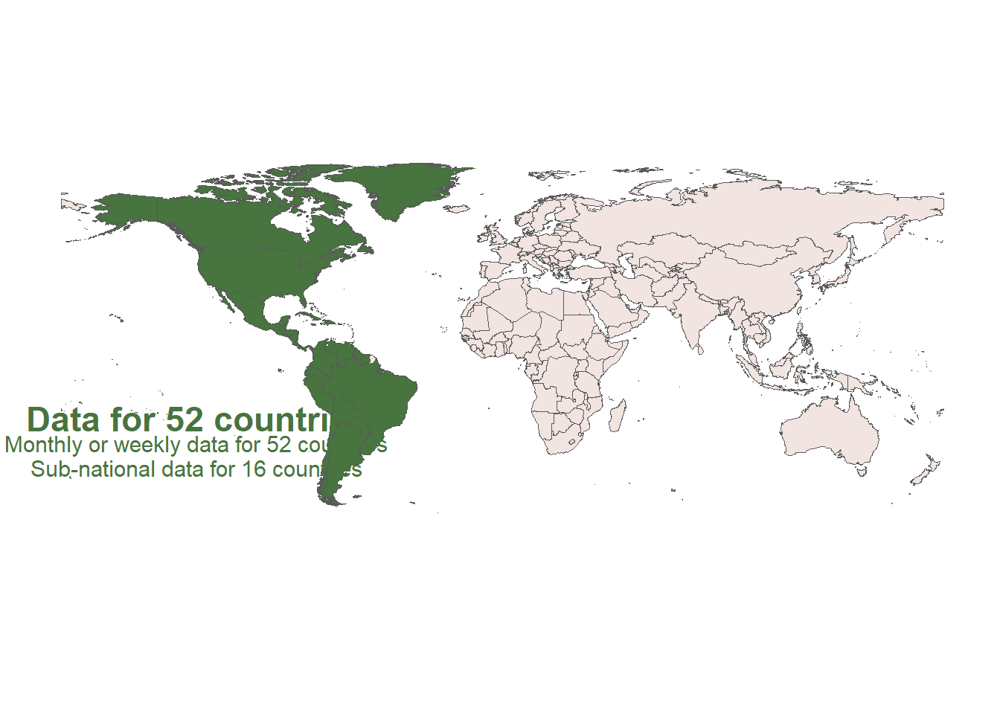

OpenDengue
Last update on April 14, 2023
Map of countries covered

Summary statistics of data coverage
Produce summary statistics of temporal resolution by each year.
temporal resolution is grouped into weekly, monthly, annually.
The maximum temporal resolution reached for that year is prioritised for
colour coding the heatmap.
Temporal resolution

Spatial resolution

Data source
In the case of multiple data sources available for the same
country-year, the data source with the most data rows is chosen and
shown on the figure below.